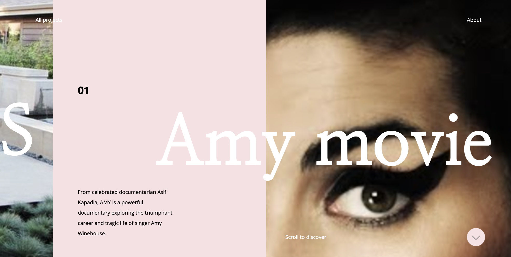

Challenge
This labs challenge was to improve our webpage layout designs by utilizing block level styling.
Problems
This lab was pretty straight forward for me. The biggest problem that I had was trying to figure out float. It had worked for me in the past but for some reason wasn't in this lab. I finally figure out that it was because I needed it to display as inline-block.
Results
I was able to create the file directory correctly, create divs, link my css file, center text, center an image, float text right, and "crop" an image using overflow .

I had problems with the iframe not being resizable, so I added this picture of my copied sitepage